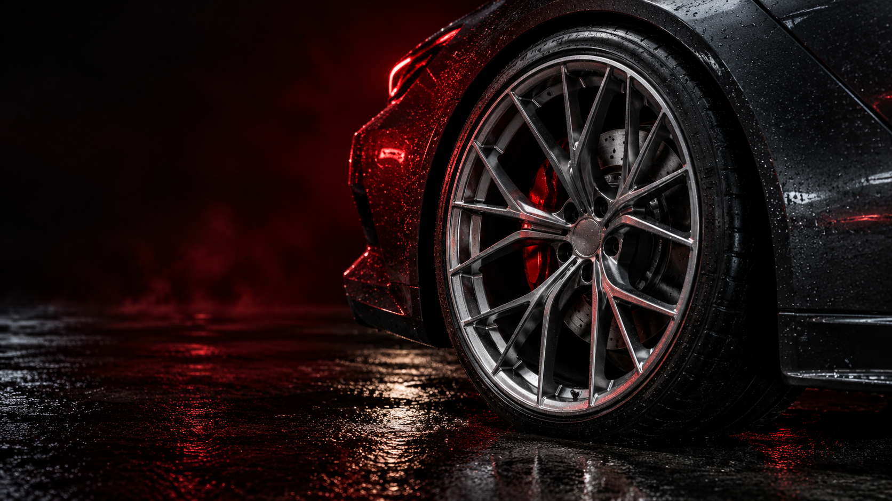
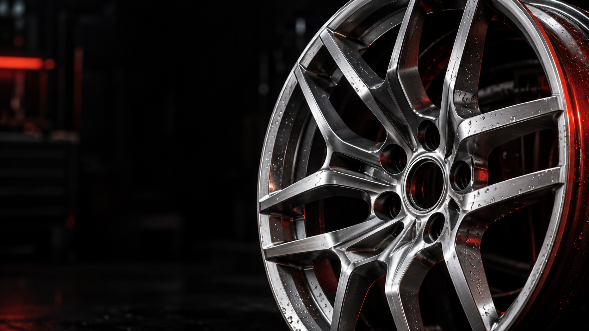

01
Шиномонтаж
Заміна комплекту до сезону, монтаж і демонтаж шин для легкових авто, кросоверів та бусів.

Заміна шин, балансування та ремонт.
Два шиномонтажі ШиноЛюкс у Луцьку.
Час перевзути авто, перевірити баланс або замінити пошкоджену шину? Обирай, із чим приїдеш.
Заміна комплекту до сезону, монтаж і демонтаж шин для легкових авто, кросоверів та бусів.
Прибрати дисбаланс після заміни шин або коли кермо починає вібрувати на швидкості.
Огляд пошкодження та ремонт шини. У прайсі є ремонт універсальним пластиром Tip-Top.
Перевірка та доведення тиску до потрібного для твого авто. Корисно перед дорогою й після зміни сезону.
Шини в наявності та під замовлення. Уточни потрібний розмір, виробника й вартість комплекту.
Залиш чотири шини на шість місяців. Можна з дисками або без — звільни місце до наступного сезону.

Обирай шини з наявних або замовляй потрібний комплект. Назви модель авто, розмір і бюджет — почнемо з того, що підходить тобі.
Уточнити наявність шинОбери тип автомобіля. Сума в картці — за одне колесо, зі зняттям, монтажем і балансуванням.
Універсальним пластиром / після огляду пошкодження.
Без дисків / із дисками.
Ціни за прайсом ШиноЛюкс. Потрібні роботи й остаточну вартість уточни перед візитом. Переглянути на сайті
Назви модель, діаметр коліс та потрібну послугу. Якщо шукаєш нові шини — уточни розмір і сезон.
Зателефонуй, щоб обговорити роботи, наявність шин або умови зберігання комплекту.
Лідавська, 1Б або Ковельська, 146В. У кожної локації є свій заїзд і графік — перевір їх перед дорогою.
У прайсі шиномонтажу ціна вказана за одне колесо. До суми входять зняття та встановлення, монтаж і балансування. Категорія авто й діаметр коліс впливають на вартість.
На сайті ШиноЛюкс вказано безкоштовний монтаж при купівлі нових шин. Балансування, зняття та інші потрібні роботи уточни окремо перед замовленням.
Так. За прайсом зберігання чотирьох шин на шість місяців коштує 500 грн без дисків або 600 грн із дисками. Наявність місця та передачу комплекту узгодь телефоном.
На Лідавську, 1Б заїжджай із Карпенка-Карого. Пн–Сб — 08:00–19:00, неділю уточни телефоном. На Ковельську, 146В заїзд із Державності: Пн–Пт 08:00–19:00, Сб 08:00–16:00, Нд — вихідний.
Обирай зручну локацію в Луцьку.
Зателефонуй, щоб узгодити послугу й час.
Луцьк / заїзд із Карпенка-Карого
Пн–Сб / 08:00–19:00
Нд / Уточни телефоном
Луцьк / заїзд із Державності
Пн–Пт / 08:00–19:00
Сб / 08:00–16:00
Нд / Вихідний